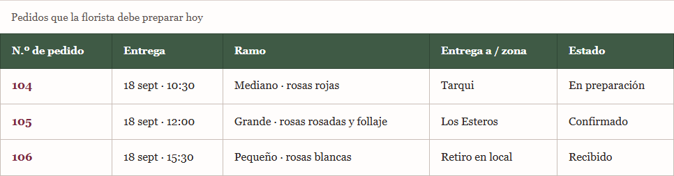

Florería local que arma ramos personalizados y coordina su entrega en Manta.
The Little Flower Shop muestra un catálogo de ramos configurables: el cliente elige flores, follaje y complementos, paga y define la entrega.
Roses Lolas adapta ese modelo a pedidos locales, confirmación directa de la florista y cobertura por zonas.
Fuente: Bouquet Builder
El flujo cambia porque el pedido real depende del pago, la zona y la disponibilidad.
Cinco entidades relacionadas · Pedido inicia en Recibido · la florista controla la preparación.
numero · estado
clienteId · ramoId · creado
nombre · telefono
correo
tamano · flores
follaje · extras
forma · estado
monto
fecha · hora
destinatario · zona
Relaciones: Cliente 1—N Pedido · Pedido 1—1 Ramo · Pedido 1—1 Pago · Pedido 1—1 Entrega.
Prohibida: Entregado → En preparación. Si hay un problema, se registra una incidencia o un pedido nuevo.
La florista trabaja todos los pedidos; el cliente solo consulta y modifica los suyos.
| Acción | Cliente | Florista |
|---|---|---|
| Ver pedidos | Solo los suyos | Todos |
| Crear pedido | Sí | No |
| Configurar ramo | Sus pedidos | No cambia lo solicitado |
| Cambiar estado | No | Todos |
| Marcar entrega | No | Todos |

Captura real de la vista maquetada: el estado se lee como palabra; el color solo acompaña.